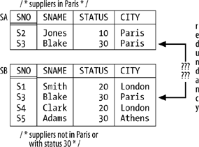
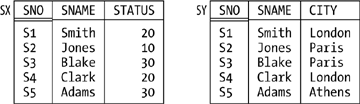

Orthogonality
Figure 7-7 shows sample values for a possible but clearly bad design for suppliers: relvar SA is suppliers in Paris, and relvar SB is suppliers who either aren't in Paris or have status 30. As you can see, the design leads to redundancy—to be specific, the tuple for supplier S3 appears in both relvars—and as usual such redundancies give rise to update anomalies. (Redundancy of any kind always has the potential to cause update anomalies.)

By the way, note that the tuple for supplier S3 must appear in both relvars. For suppose it appeared in SB but not SA, say. From SA, then, the Closed World Assumption would allow us to infer that it's not the case that supplier S3 is in Paris. But SB tells us that supplier S3 is in Paris. Thus, we would have a contradiction on our hands, and the database would be inconsistent.
Well, the problem with the design of Figure 7-7 is obvious: it's precisely the fact that the very same tuple can appear in two distinct relvars—meaning, more precisely, that it's possible for that tuple to appear in both relvars without violating any constraint for either. So an obvious rule is:
The Principle of Orthogonal Design (first version): No two distinct relvars in the same database should be such that their relvar constraints permit the same tuple to appear in both.
The term orthogonal here derives from the fact that what the principle effectively says is that relvars should all be independent of one another—which they won't be, if their constraints "overlap," as it were.
Now, it should be clear that two relvars can't possibly violate the foregoing principle if they're of different types, and so you might be thinking the principle isn't worth much. After all, it isn't very usual for a database to contain two or more relvars of the same type. But consider Figure 7-8, which shows another possible but clearly bad design for suppliers. While there's no way in that design for the same tuple to appear in both relvars, it is possible for a tuple in SX and a tuple in SY to have the same projection on {SNO,SNAME}—and that fact leads to redundancy and update anomalies again. So we need to extend the design principle accordingly:
The Principle of Orthogonal Design (second and final version): Let A and B be distinct relvars in the same database. Then there must not exist nonloss decompositions of A and B into (say) A1, A2, . . . , Am and B1, B2, . . . , Bn, respectively, such that the relvar constraints for some projection Ai in the set A1, A2, . . . , Am and some projection Bj in the set B1, B2, . . . , Bn permit the same tuple to appear in both.
The term nonloss decomposition here refers to nonloss decomposition in the usual normalization sense.

Several points arise from the foregoing discussion and definition:
The second version of the principle subsumes the previous version, because one "nonloss decomposition" that's always available for any relvar R is the one that consists of just the identity projection (the projection of R on all of its attributes). Like the principles of normalization, The Principle of Orthogonal Design is basically just common sense—but (again like normalization) it's formalized common sense. The goal of orthogonal design is to reduce redundancy and thereby to avoid update anomalies (again like normalization). In fact, orthogonality complements normalization, in the sense that—loosely speaking—normalization reduces redundancy within relvars, while orthogonality reduces redundancy across relvars. In fact, orthogonality complements normalization in another way, too. Again consider the decomposition of relvar S into its projections SX and SY, as illustrated in Figure 7-8. I now observe that that decomposition satisfies all of the usual normalization principles! Both projections are in 5NF; the decomposition is nonloss; dependencies are preserved; and both projections are needed to reconstruct the original relvar S. It's orthogonality, not normalization, that tells us the decomposition is bad. Orthogonality might be common sense, but it's often flouted in practice. That is, designs like this one, from a financial database, are encountered quite frequently:
ACTIVITIES_2001 { ENTRYNO, DESCRIPTION, AMOUNT, NEW_BAL }
ACTIVITIES_2002 { ENTRYNO, DESCRIPTION, AMOUNT, NEW_BAL }
ACTIVITIES_2003 { ENTRYNO, DESCRIPTION, AMOUNT, NEW_BAL }
ACTIVITIES_2004 { ENTRYNO, DESCRIPTION, AMOUNT, NEW_BAL }
ACTIVITIES_2005 { ENTRYNO, DESCRIPTION, AMOUNT, NEW_BAL }
...
A better design involves just a single relvar:
ACTIVITIES { ENTRYNO, DESCRIPTION, AMOUNT, NEW_BAL, YEAR }
NOTE Of course, one reason why such multi-relvar designs occur in practice is because there are often good reasons for partitioning the data at the physical level, and the system in question is such that the partitioning therefore has to show through to the logical level as well. But reasons in favor of a certain physical design aren't good reasons in favor of a bad logical design. If A and B are relvars of the same type, adherence to the orthogonal design principle implies that:
A INTERSECT B : is always empty
A UNION B : is always a disjoint union
A MINUS B : is always equal to A
Suppose we decide for some reason to decompose our usual suppliers relvar into a set of restrictions. Then orthogonality tells us those restrictions should be pairwise disjoint,in the sense that no tuple can ever appear in more than one of them. (Also, of course, the union of those restrictions must give us back the original relvar.) Such a decomposition is said to be an orthogonal decomposition.
|